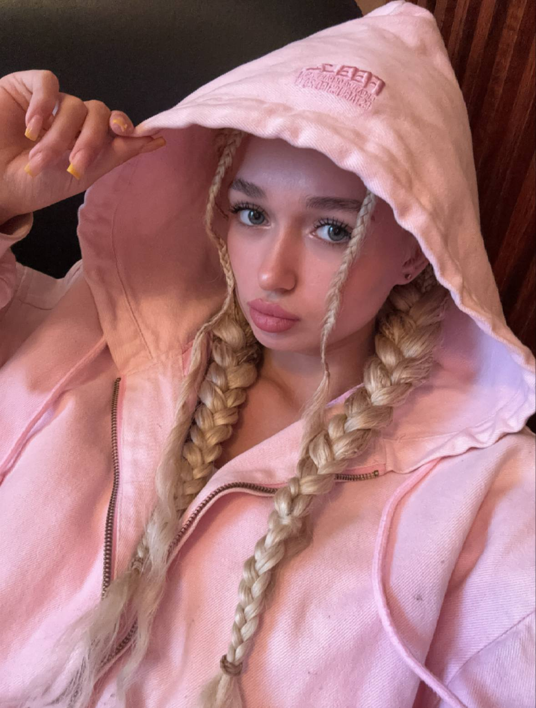

Дата рождения: 27 сентября 2005 года
Место рождения: Абу-Даби, ОАЭ
Образование: Университет Абу-Даби, авиаинженерия
Родилась в столице Объединенных Арабских Эмиратов - Абу-Даби. Ее отец - один из главных акционеров крупнейшего банка Emirates NBD. Получив от него стартап, Иктималь открыла свою сеть коммерческих магазинов в Абу-Даби и Дубае. В 2025 года запустила своего оператора связи - Yalla Mobile - который скоро выходит и на российский рынок. Обучается в Университете Абу-Даби на специальности авиаинженерии.